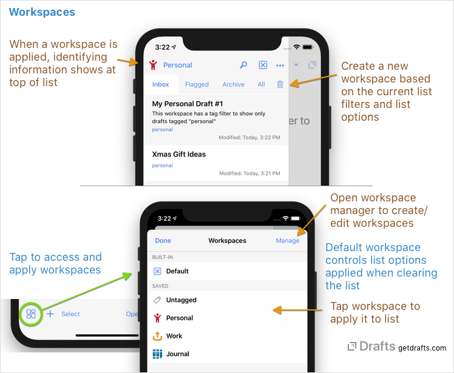
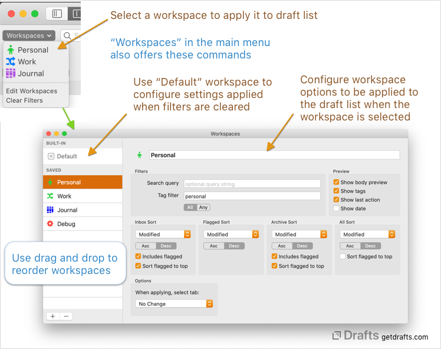
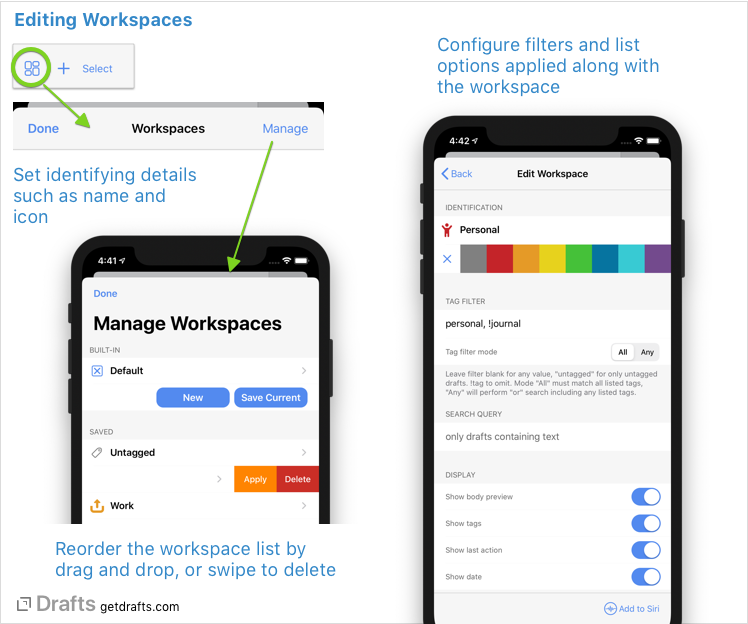
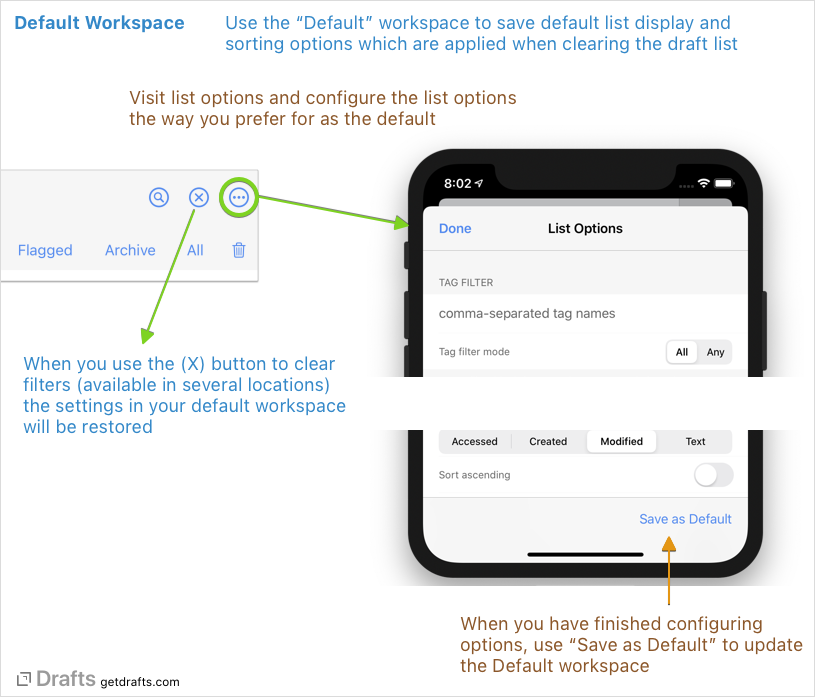
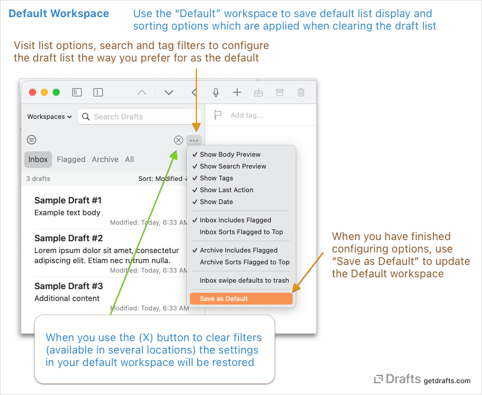

Workspaces
Drafts can filter and configure various options related to the draft list. Configuring those filters is covered in another article. Workspaces allow you to save and apply a set of list configuration and filtering options.
Think of workspaces as a macros which apply a set of filters and options to the draft list. Workspaces are great to easily view a subset of drafts tagged for a particular project or context.
Because workspaces save all display, sort, and filtering options, applying a workspace can completely transform the list display.
Table of Contents
Creating and Managing Workspaces
 
Workspaces are created and managed in the list options (•••) view available near the top of the draft list. When creating a new workspace, it is often best to use the “Current List Options” to configure and test the filters, sort settings, etc., you want for the workspace, then use the “Save Current” option to create a new workspace based on those settings.
Saved Workspaces displays all existing saved workspaces, and tapping on one in the list applies the workspace settings, loading its tag filters, search query, and sort options in the draft list.
Every installation of Drafts also has one special workspace, the “Default” workspace which is the set of display and filtering options applied when the [x] button to clear workspaces is used. Read more about the default workspace.
Editing Workspaces
To update settings on a workspace, swipe to the left to display actions, and select “Edit”.

Filters
Filter limit the drafts included in the workspace:
- Search Query: A text search string which will be loaded in the search field
- Tag Filter: Comma-separated list of tags to load in the tag filters. If “All” is selected, all tags must be assigned, if “Any” selected drafts with any of the listed tags will be included in the filter. A tag prefixed with “!” will be omitted.
Date Filters
Workspaces can also limit the drafts displayed by date using start and end date filters. A typical example use-case for date filters is a “Today” workspace that shows only drafts modified on the current date.
Date filters can be defined to work on created, modified, or accessed dates. If a start date filter is enabled, it will create a limit for only drafts with dates greater than or equal to the specified filter date. Conversely, an end date filter will limit based on date less than or equal to the filter date.
There are two types of date filter:
- Absolute: A specific date. This type of filter will always return the same specific date and can be used for creating stable limits.
- Relative: A date relative to the current date, defined by a number of days to add or subtract from the current date at the time the filter is evaluated.
Start and end date filter can be used separately, or together to create a date range.
Display and Sort Options
- Name, Icon, and Color: Select identifying information for the workspace. Tap the icon to select.
- Preview: Toggle to control whether the draft list will display a preview of the body text, the last action performed and/or tags assigned in the list.
- Sort Options: Each tab in the draft list, Inbox, Flagged, Archive, All can have its own sort order defined which will be loaded along with the workspace.
- Include flagged: Inbox and archive can optionally include or omit flagged drafts.
- Sort flagged to top: If enabled, any flagged drafts will be sorted to the top of the list before the sort order is applied.
Select Options
If desired, a workspace can select the active list tab when applied. This is useful in cases where you want to always be sure to select the Inbox, Archive, etc. when browsing the workspace.
If selected, specific action groups can be loaded in the action list and extended keyboard row along with the workspace. If a particular workspace is used for editing TaskPaper format files, it might be helpful to also load a set of actions and keys specific to working with Taskpaper.
Default Workspace
The default workspace is a special workspace (available in the non-pro version) which stores the default preferred draft list display and sorting options. The default workspace is applied when using any of the “Clear Filters” options in the app.
 
To update your default workspace, configure the list options the way you prefer, then use the “Save as Default” option to update the default workspace. After saving, whenever you use the [X] buttons to clear filters on the draft list, these default display and sort options will be applied.
Workspace Sharing and Backup
The share button on a workspace’s edit screen allows you to export a workspace as either a shareable URL or a file. Both of these options provide a way to install the workspace configuration in any installation of Drafts, allowing you to backup and restore workspace configurations, or share them with other users.
To install a workspace, either click on the share URL or open the .draftsWorkspace export file in any installation of Drafts. The workspace will be imported as a new workspace (not replacing any existing ones).